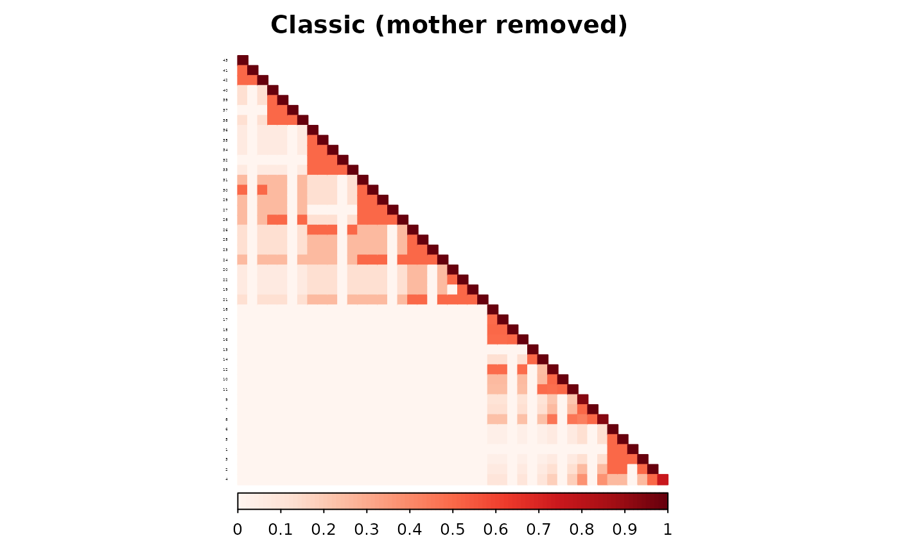
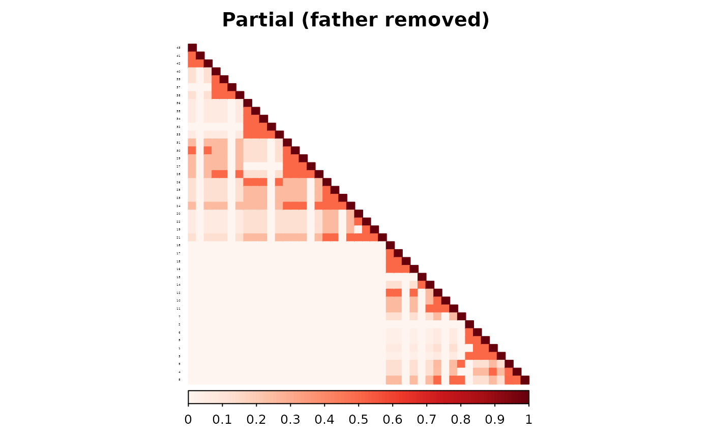
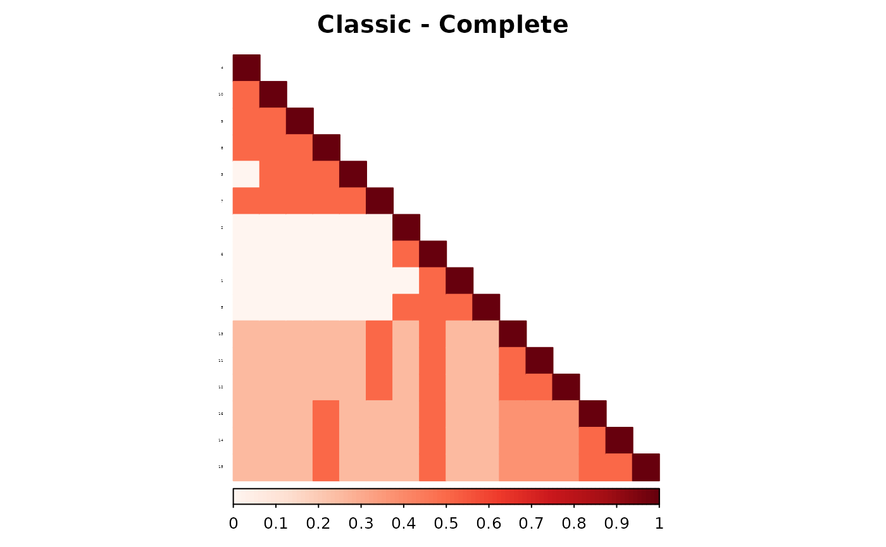
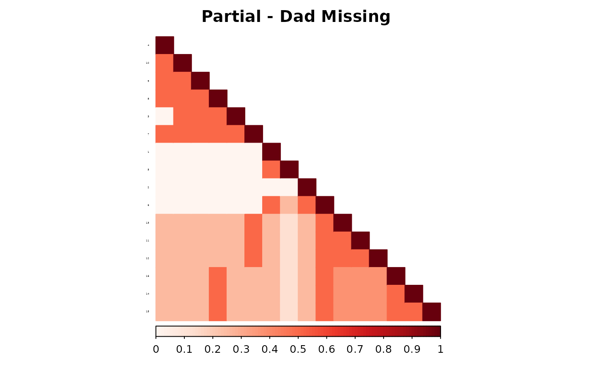

Introduction
The ped2com function computes relationship matrices from
pedigree data using a recursive algorithm based on parent-offspring
connections. Central to this computation is the parent
adjacency matrix, which defines how individuals in the
pedigree are connected across generations. The adjacency matrix acts as
the structural input from which genetic relatedness is propagated.
The function offers two methods for constructing this matrix:
- The classic method, which assumes that all parents are known and that the adjacency matrix is complete.
- The partial parent method, which allows for missing values in the parent adjacency matrix.
When parent data are complete, both methods return equivalent results. But when parental information is missing, their behavior diverges. This vignette illustrates how and why these differences emerge, and under what conditions the partial method provides more accurate results.
Hazard Data Example
We begin with the hazard dataset. First, we examine
behavior under complete pedigree data.

#> named list()We compute the additive genetic relationship matrix using both the classic and partial parent methods. Because the pedigree is complete, we expect no differences in the resulting matrices.
ped_add_partial_complete <- ped2com(df,
isChild_method = "partialparent",
component = "additive",
adjacency_method = "direct"
)
ped_add_classic_complete <- ped2com(df,
isChild_method = "classic",
component = "additive", adjacency_method = "direct"
)The following plots display the full additive matrices. These matrices should be identical.
This can be confirmed visually and numerically.
library(corrplot)
#> corrplot 0.95 loaded
corrplot(as.matrix(ped_add_classic_complete),
method = "color", type = "lower", col.lim = c(0, 1),
is.corr = FALSE, title = "Additive component - Classic method"
)
corrplot(as.matrix(ped_add_partial_complete),
method = "color", type = "lower", col.lim = c(0, 1),
is.corr = FALSE, title = "Additive component - Partial parent method"
)To verify this, we subtract one matrix from the other and calculate RMSE. The difference should be numerically zero. Indeed, it is 0.
Introducing Missingness: Remove a Parent
To observe how the two methods diverge when data are incomplete, we remove one parent—starting with the mother of individual 4.
df$momID[df$ID == 4] <- NA
ped_add_partial_mom <- ped_add_partial <- ped2com(df,
isChild_method = "partialparent",
component = "additive",
adjacency_method = "direct"
)
ped_add_classic_mom <- ped_add_classic <- ped2com(df,
isChild_method = "classic",
component = "additive", adjacency_method = "direct"
)The two methods now treat individual 4 differently in the parent adjacency matrix. The classic method applies a fixed contribution because one parent remains. The partial parent method inflates the individual’s diagonal contribution to account for the missing parent.
The resulting additive matrices reflect this difference. The RMSE between the two matrices is 0.009811.
corrplot(as.matrix(ped_add_classic),
method = "color", type = "lower", col.lim = c(0, 1),
is.corr = FALSE, title = "Classic (mother removed)"
)
corrplot(as.matrix(ped_add_partial),
method = "color", type = "lower", col.lim = c(0, 1),
is.corr = FALSE, title = "Partial (mother removed)"
)We quantify the overall matrix difference:
Next, we compare each method to the matrix from the complete pedigree. This evaluates how much each method deviates from the correct additive structure.
corrplot(as.matrix(ped_add_classic_complete - ped_add_classic),
method = "color", type = "lower", col.lim = c(0, 1),
is.corr = FALSE
)The RMSE between the true additive component and the classic method is 0.0299137.
corrplot(as.matrix(ped_add_classic_complete - ped_add_partial),
method = "color", type = "lower", col.lim = c(0, 1),
is.corr = FALSE
)The RMSE between the true additive component and the partial parent method is 0.028259.
The partial method shows smaller deviations from the complete matrix, confirming that it better preserves relatedness structure when one parent is missing.
Removing the Father Instead
We now repeat the same process, this time removing the father of individual 4.
data(hazard)
df <- hazard # this is the data that we will use for the example
df$dadID[df$ID == 4] <- NA
# add
ped_add_partial_dad <- ped_add_partial <- ped2com(df,
isChild_method = "partialparent",
component = "additive",
adjacency_method = "direct"
)
ped_add_classic_dad <- ped_add_classic <- ped2com(df,
isChild_method = "classic",
component = "additive", adjacency_method = "direct"
)As we can see, the two matrices are different. The RMSE between the two matrices is 0.009811.
corrplot(as.matrix(ped_add_classic_dad),
method = "color", type = "lower", col.lim = c(0, 1),
is.corr = FALSE, title = "Classic (father removed)"
)
corrplot(as.matrix(ped_add_partial_dad),
method = "color", type = "lower", col.lim = c(0, 1),
is.corr = FALSE, title = "Partial (father removed)"
)
Again, we compare to the true matrix from the complete pedigree:
corrplot(as.matrix(ped_add_classic_complete - ped_add_classic),
method = "color", type = "lower", col.lim = c(0, 1),
is.corr = FALSE
)
corrplot(as.matrix(ped_add_classic_complete - ped_add_partial),
method = "color", type = "lower", col.lim = c(0, 1),
is.corr = FALSE
)The partial parent method again yields a matrix closer to the full-data version.
Inbreeding Dataset: Family-Level Evaluation
To generalize the comparison across a larger and more varied set of
pedigrees, we use the inbreeding dataset. Each family in
this dataset is analyzed independently.
For each one, we construct the additive relationship matrix under complete information and then simulate two missingness scenarios:
Missing mother: One individual with a known mother is randomly selected, and the mother’s ID is set to NA.
Missing father: Similarly, one individual with a known father is selected, and the father’s ID is set to NA.
In each condition, we recompute the additive matrix using both the classic and partial parent methods. We then calculate the RMSE between each estimate and the matrix from the complete pedigree. This allows us to quantify which method more accurately reconstructs the original relatedness structure when parental data are partially missing.
inbreeding_list <- list()
results <- data.frame(
FamIDs = FamIDs,
RMSE_partial_dad = rep(NA, length(FamIDs)),
RMSE_partial_mom = rep(NA, length(FamIDs)),
RMSE_classic_dad = rep(NA, length(FamIDs)),
RMSE_classic_mom = rep(NA, length(FamIDs)),
max_R_classic_dad = rep(NA, length(FamIDs)),
max_R_partial_dad = rep(NA, length(FamIDs)),
max_R_classic_mom = rep(NA, length(FamIDs)),
max_R_partial_mom = rep(NA, length(FamIDs)),
max_R_classic = rep(NA, length(FamIDs))
)The loop below performs this procedure for all families in the dataset and stores both the RMSEs and the maximum relatedness values.
for (i in 1:length(FamIDs)) {
# make three versions to filter down
df_fam_dad <- df_fam_mom <- df_fam <- df[df$FamID == FamIDs[i], ]
results$RMSE_partial_mom[i] <- sqrt(mean((ped_add_classic_complete - ped_add_partial_mom)^2))
ped_add_partial_complete <- ped2com(df_fam,
isChild_method = "partialparent",
component = "additive",
adjacency_method = "direct"
)
ped_add_classic_complete <- ped2com(df_fam,
isChild_method = "classic",
component = "additive",
adjacency_method = "direct"
)
# select first ID with a mom and dad
momid_to_cut <- df_fam$ID[!is.na(df_fam$momID)] %>% head(1)
dadid_to_cut <- df_fam$ID[!is.na(df_fam$dadID)] %>% head(1)
df_fam_dad$dadID[df_fam$ID == dadid_to_cut] <- NA
df_fam_mom$momID[df_fam$ID == momid_to_cut] <- NA
ped_add_partial_dad <- ped2com(df_fam_dad,
isChild_method = "partialparent",
component = "additive",
adjacency_method = "direct"
)
ped_add_classic_dad <- ped2com(df_fam_dad,
isChild_method = "classic",
component = "additive", adjacency_method = "direct"
)
results$RMSE_partial_dad[i] <- sqrt(mean((ped_add_classic_complete - ped_add_partial_dad)^2))
results$RMSE_classic_dad[i] <- sqrt(mean((ped_add_classic_complete - ped_add_classic_dad)^2))
results$max_R_classic_dad[i] <- max(as.matrix(ped_add_classic_dad))
results$max_R_partial_dad[i] <- max(as.matrix(ped_add_partial_dad))
ped_add_partial_mom <- ped2com(df_fam_mom,
isChild_method = "partialparent",
component = "additive",
adjacency_method = "direct"
)
ped_add_classic_mom <- ped2com(df_fam_mom,
isChild_method = "classic",
component = "additive", adjacency_method = "direct"
)
results$RMSE_partial_mom[i] <- sqrt(mean((ped_add_classic_complete - ped_add_partial_mom)^2))
results$RMSE_classic_mom[i] <- sqrt(mean((ped_add_classic_complete - ped_add_classic_mom)^2))
results$max_R_classic_mom[i] <- max(as.matrix(ped_add_classic_mom))
results$max_R_partial_mom[i] <- max(as.matrix(ped_add_partial_mom))
results$max_R_classic[i] <- max(as.matrix(ped_add_classic_complete))
inbreeding_list[[i]] <- list(
df_fam = df_fam,
ped_add_partial_complete = ped_add_partial_complete,
ped_add_classic_complete = ped_add_classic_complete,
ped_add_partial_dad = ped_add_partial_dad,
ped_add_classic_dad = ped_add_classic_dad,
ped_add_partial_mom = ped_add_partial_mom,
ped_add_classic_mom = ped_add_classic_mom
)
}Example: Family 1
To understand what these matrices look like, we visualize them for one representative family. For this example, we select the first family in the dataset.
#> named list()
# pull the first family from the list
fam1 <- inbreeding_list[[1]]
corrplot(as.matrix(fam1$ped_add_classic_complete),
method = "color", type = "lower", col.lim = c(0, 1),
is.corr = FALSE, title = "Classic - Complete"
)
corrplot(as.matrix(fam1$ped_add_classic_mom),
method = "color", type = "lower", col.lim = c(0, 1),
is.corr = FALSE, title = "Classic - Mom Missing"
)
corrplot(as.matrix(fam1$ped_add_partial_mom),
method = "color", type = "lower", col.lim = c(0, 1),
is.corr = FALSE, title = "Partial - Mom Missing"
)
corrplot(as.matrix(fam1$ped_add_classic_dad),
method = "color", type = "lower", col.lim = c(0, 1),
is.corr = FALSE, title = "Classic - Dad Missing"
)
corrplot(as.matrix(fam1$ped_add_partial_dad),
method = "color", type = "lower", col.lim = c(0, 1),
is.corr = FALSE, title = "Partial - Dad Missing"
)
To visualize the differences from the true matrix:
corrplot(as.matrix(fam1$ped_add_classic_complete - fam1$ped_add_classic_mom),
method = "color", type = "lower", col.lim = c(0, 1),
is.corr = FALSE, title = "Classic Mom Diff from Complete"
)
corrplot(as.matrix(fam1$ped_add_classic_complete - fam1$ped_add_partial_mom),
method = "color", type = "lower", col.lim = c(0, 1),
is.corr = FALSE, title = "Partial Mom Diff from Complete"
)
corrplot(as.matrix(fam1$ped_add_classic_complete - fam1$ped_add_classic_dad),
method = "color", type = "lower", col.lim = c(0, 1),
is.corr = FALSE, title = "Classic Dad Diff from Complete"
)
corrplot(as.matrix(fam1$ped_add_classic_complete - fam1$ped_add_partial_dad),
method = "color", type = "lower", col.lim = c(0, 1),
is.corr = FALSE, title = "Partial Dad Diff from Complete"
)These plots show how each method responds to missing data, and whether it maintains consistency with the complete pedigree. We observe that the partial parent method typically introduces smaller deviations. If desired, this same diagnostic can be repeated for additional families, such as inbreeding_list[[2]].
Summary
Across all families in the inbreeding dataset, the results show a consistent pattern: the partial parent method outperforms the classic method in reconstructing the additive genetic relationship matrix when either a mother or a father is missing.
To make this explicit, we calculate the RMSE difference between methods. A positive value means that the partial method had lower RMSE (i.e., better accuracy) than the classic method:
results <- results %>%
as.data.frame() %>%
mutate(
RMSE_diff_dad = RMSE_classic_dad - RMSE_partial_dad,
RMSE_diff_mom = RMSE_classic_mom - RMSE_partial_mom
)We can then summarize the pattern across families:
results %>%
select(RMSE_diff_mom, RMSE_diff_dad) %>%
summary()
#> RMSE_diff_mom RMSE_diff_dad
#> Min. :0.001222 Min. :0.001222
#> 1st Qu.:0.001869 1st Qu.:0.002036
#> Median :0.002538 Median :0.002520
#> Mean :0.005763 Mean :0.005786
#> 3rd Qu.:0.005625 3rd Qu.:0.005625
#> Max. :0.024221 Max. :0.024221In all families, both RMSE_diff_mom and
RMSE_diff_dad are positive—indicating that the classic
method produces larger the errors relative to the partial method. This
holds regardless of whether the missing parent is a mother or a
father.
To verify this directly:
mean(results$RMSE_diff_mom > 0, na.rm = TRUE)
#> [1] 1
mean(results$RMSE_diff_dad > 0, na.rm = TRUE)
#> [1] 1These proportions show how often the partial method produces a lower RMSE across the dataset. This confirms the earlier findings: when pedigree data are incomplete, the partial parent method more faithfully reconstructs the full-data relatedness matrix.
results %>%
as.data.frame() %>%
select(
-FamIDs, -RMSE_diff_mom, -RMSE_diff_dad, -max_R_classic_dad,
-max_R_partial_dad, -max_R_classic_mom, -max_R_partial_mom, -max_R_classic
) %>%
summary()
#> RMSE_partial_dad RMSE_partial_mom RMSE_classic_dad RMSE_classic_mom
#> Min. :0.04773 Min. :0.04773 Min. :0.04895 Min. :0.04895
#> 1st Qu.:0.05570 1st Qu.:0.05349 1st Qu.:0.05774 1st Qu.:0.05555
#> Median :0.06206 Median :0.06899 Median :0.06457 Median :0.07158
#> Mean :0.07545 Mean :0.07686 Mean :0.08124 Mean :0.08262
#> 3rd Qu.:0.08237 3rd Qu.:0.08323 3rd Qu.:0.08866 3rd Qu.:0.08866
#> Max. :0.15547 Max. :0.15547 Max. :0.17969 Max. :0.17969